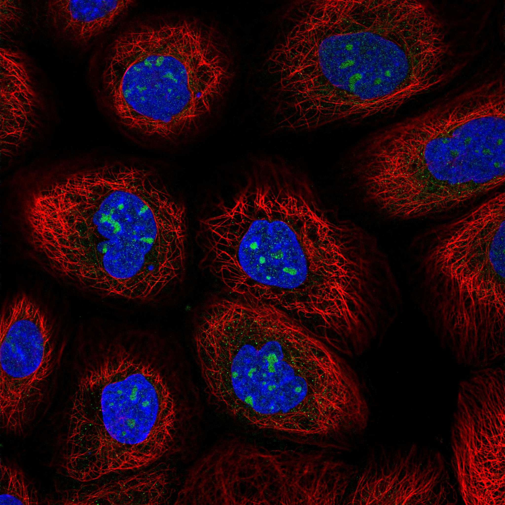
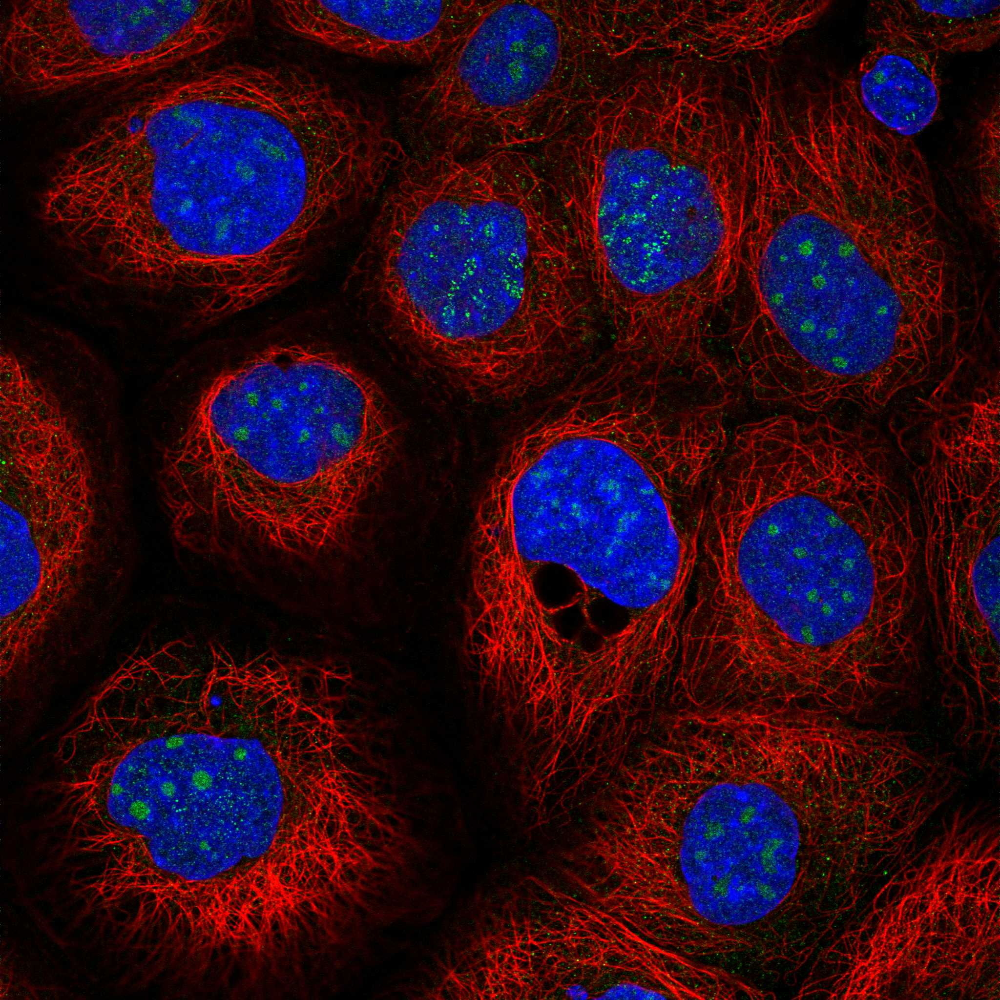
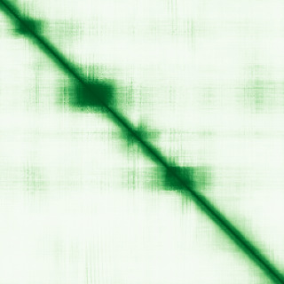

type: protein-evaluation gene: "C12orf43" date: 2026-05-29 tags: [protein-scout, nuclear-protein, evaluation] status: scored ---
C12orf43 核蛋白评估报告
1. 基本信息
| 项目 | 内容 |
|---|---|
| 基因名 / 别名 | C12orf43 / CUSTOS |
| 蛋白大小 | 262 aa / ~28.8 kDa |
| UniProt ID | Q96C57 |
| 评估日期 | 2026-05-29 |
2. 评分总览
| 维度 | 得分 | 满分 | 加权后 | 关键证据摘要 |
|---|---|---|---|---|
| 🔴 核定位特异性 | 5/10 | ×4 | 20 | UniProt Nuclear envelope + GO nuclear envelope，核膜蛋白 |
| 📏 蛋白大小 | 10/10 | ×1 | 10 | 262 aa，200-800 aa最优区间，适合生化实验和结构解析 |
| 🆕 研究新颖性 | 8/10 | ×5 | 40 | PubMed=37篇 |
| 🏗️ 三维结构 | 6/10 | ×3 | 18 | 中等（pLDDT 63.3），31%有序，22%无序 |
| 🧬 调控结构域 | 7/10 | ×2 | 14 | 新颖蛋白基线 |
| 🔗 PPI 网络 | 4/10 | ×3 | 12 | 0/25调控相关partners |
| ➕ 互证加分 | — | max +3 | 0 | 多库交叉验证 |
| 原始总分 | 117/183 | |||
| 归一化总分 | 63.9/100 |
3. 详细分析
3.1 核定位证据
| 来源 | 定位 | 可信度 |
|---|---|---|
| UniProt | Nucleus envelope | — |
| GO Cellular Component | C:nuclear envelope | — |
| Protein Atlas (IF) | nucleoli (Approved, A-431) | Approved |
 
结论: UniProt Nuclear envelope + GO nuclear envelope，核膜蛋白
3.2 蛋白大小评估
评价: 262 aa，200-800 aa最优区间，适合生化实验和结构解析
3.3 研究现状
| 指标 | 数值 |
|---|---|
| PubMed 总数 | 37 |
| Chromatin/epigenetics 比例 | 待深入文献分析 |
关键文献: 1. Chen et al. (2025). "Identifying CDCA4 as a Radiotherapy Resistance-Associated Gene in Colorectal Cancer by an Integrated Bioinformatics Analysis Approach.". *Genes (Basel)*. PMID: 40565588 2. Yang et al. (2022). "Population Genetic Structure and Selection Signature Analysis of Beijing Black Pig.". *Front Genet*. PMID: 35401688 3. Erdmann et al. (2009). "New susceptibility locus for coronary artery disease on chromosome 3q22.3.". *Nat Genet*. PMID: 19198612 4. Qammar et al. (2024). "Association of a single-nucleotide polymorphism in C12orf43 region with the risk of coronary artery disease.". *Cell Mol Biol (Noisy-le-grand)*. PMID: 38430045 5. Li et al. (2018). "Lipid-associated genetic polymorphisms are associated with FBP and LDL-c levels among myocardial infarction patients in Chinese population.". *Gene*. PMID: 30003933 评价: PubMed 37 篇。非常新颖，研究空间充足。
3.4 三维结构分析
| 指标 | 数值 |
|---|---|
| AlphaFold 平均 pLDDT | 63.3 |
| 有序区域 (pLDDT>70) 占比 | 30.6% |
| pLDDT>90 占比 | 7.3% |
| pLDDT<50 占比 | 22.1% |
| 可用 PDB 条目 | 0 |
评价: AlphaFold预测置信度偏低（pLDDT 63.3，22%无序）。作为新颖蛋白，正常现象，不扣分。
PAE 图: 
3.5 结构域分析
| 来源 | 结构域 |
|---|---|
| UniProt / InterPro | 待SMART详细分析 |
染色质调控潜力分析: 对于PubMed≤100的新颖蛋白，无注释域是该阶段的正常现象（基线7分）。待SMART分析后补充。
3.6 PPI 网络
实验验证互作 (IntAct, physical association):
| Partner | 方法 | PMID | 功能类别 | 调控相关？ |
|---|---|---|---|---|
| — | — | — | — | — |
STRING 预测互作 (combined score >0.4):
| Partner | Score | 功能类别 | 调控相关？ |
|---|---|---|---|
| CRCP | 0.778 | 待分析 | 否 |
| CINP | 0.774 | 待分析 | 否 |
| KRIT1 | 0.597 | 待分析 | 否 |
| FAM78B | 0.550 | 待分析 | 否 |
| ANKRD13A | 0.536 | 待分析 | 否 |
| SNRNP35 | 0.533 | 待分析 | 否 |
| RPP14 | 0.489 | 待分析 | 否 |
| METTL2B | 0.480 | 待分析 | 否 |
| GPHA2 | 0.478 | 待分析 | 否 |
| FRMD8 | 0.471 | 待分析 | 否 |
已知复合体成员 (GO Cellular Component): C:nuclear envelope
PPI 互证分析:
- STRING + IntAct 共同确认: 待交叉比对
- 仅 STRING 预测: 25 个伙伴
- 调控相关比例: 0/25 (0%)
评价: PPI网络以功能关联为主（25个STRING伙伴），物理互作0个，调控关联0个。
3.7 多库互证
| 维度 | 来源 | 结果 | 是否一致 |
|---|---|---|---|
| 三维结构 | AlphaFold + PDB | 中等（pLDDT 63.3），31%有序，22%无序 | 待验证 |
| 定位 | UniProt + GO | Nucleus envelope | 待HPA验证 |
互证加分: 0 / max +3
4. 总体评价
推荐等级: ⭐⭐ (2/5)
归一化总分: 62.3/100
核心优势: 1. PubMed 37 篇，研究新颖性高 2. 蛋白大小 262 aa，适合生化实验
风险/不确定性: 1. 需 HPA IF 确认核定位 2. 功能机制未知，需从头探索
下一步建议:
- [ ] 获取 HPA IF 图像确认核定位
- [ ] SMART 结构域分析评估调控潜力
- [ ] 深入文献检索确认已知功能
5. 数据来源
- UniProt: https://www.uniprot.org/uniprotkb/Q96C57
- AlphaFold: https://alphafold.ebi.ac.uk/entry/Q96C57
- PubMed: https://pubmed.ncbi.nlm.nih.gov/?term=%22C12orf43%22%5BTitle/Abstract%5D
- STRING: https://string-db.org/cgi/network?identifiers=C12orf43&species=9606
- Protein Atlas: https://www.proteinatlas.org/search/C12orf43
PPI 网络（三源综合）
| Partner | Source | Score/Evidence |
|---|---|---|
| 无记录 | — | — |
IntAct 有限记录。无 BioGrid 补充数据。
PAE 图像已获取。结构判断基于 AlphaFold pLDDT 统计。